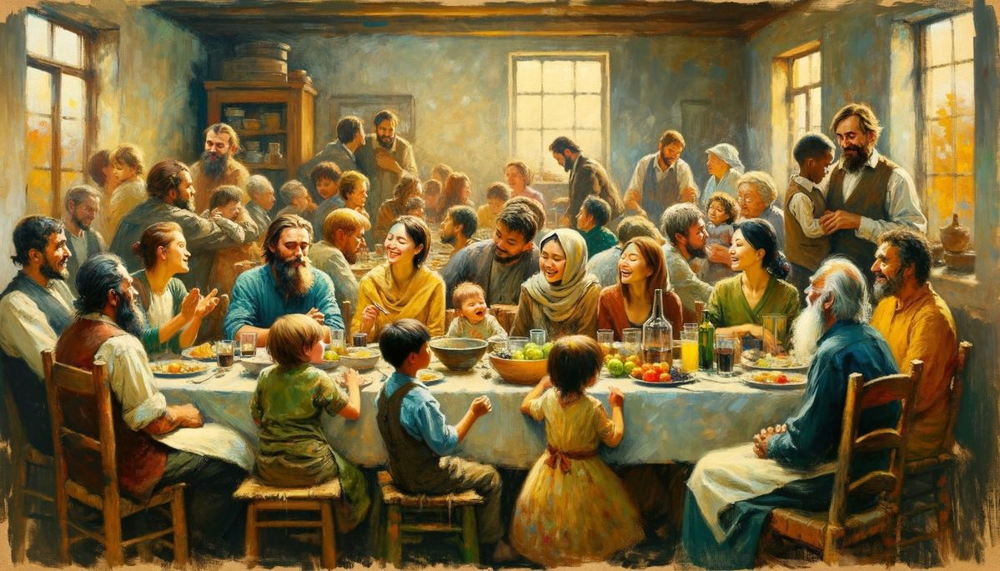

The Miracle at the Wedding in Cana
The miracle at the Wedding in Cana is not just a story of a home — it is the story of humanity’s hope. That day, water became wine; today, faith becomes joy. As Mary said: “Do whatever He tells you.” That invitation still echoes in every heart today. When we obey His word, miracles are sure to happen.
Jesus’ First Miracle

The Beginning of the Miracle – Water Turns into Wine
அதிசயத்தின் துவக்கம் – தண்ணீர் திராட்சரசமாகும் தருணம்
Nearby stood six large stone jars, each holding about 80–100 liters of water. They were used by the Jews for ceremonial purification. Jesus said to the servants, “Fill the jars with water.” They filled them to the brim. Then Jesus said, “Now draw some out and take it to the master of the feast.” The servants obeyed. When the master of the feast tasted it, it was no longer water — it had become the finest wine!
The miracle at the Wedding in Cana became the symbol of Jesus’ love, the testimony of Mary’s faith, and the blessing of Eliab and Miriam’s life. “You turned water into wine, O God who turns sorrow into joy — may our homes and lives be forever blessed.”